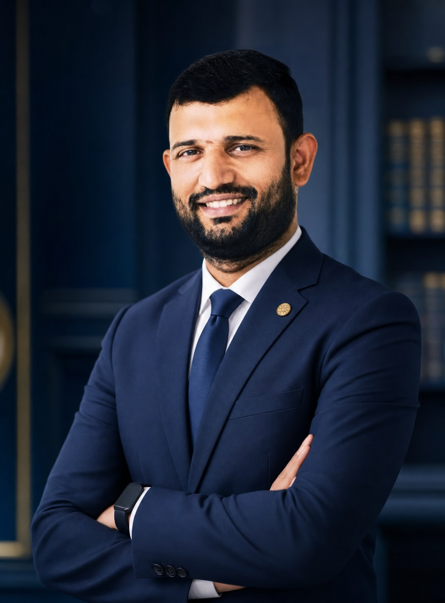

About Dr. Reddy
Education leadership with strategic clarity.
Dr. M.R.S. Suryanarayana Reddy works with higher education institutions to make growth more focused, student-centred, and measurable. His experience brings admissions, institutional branding, digital transformation, and academic leadership into one practical direction.
Over nearly two decades in education, he has helped leadership teams sharpen positioning, strengthen recruitment systems, and create better journeys for prospective students, faculty, and institutional partners.
His consulting approach is collaborative and execution-led: begin with the real challenge, align people and priorities, and build lasting momentum through clear systems and accountable action.
